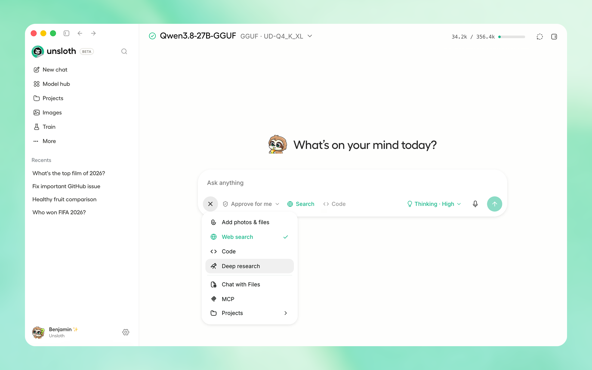
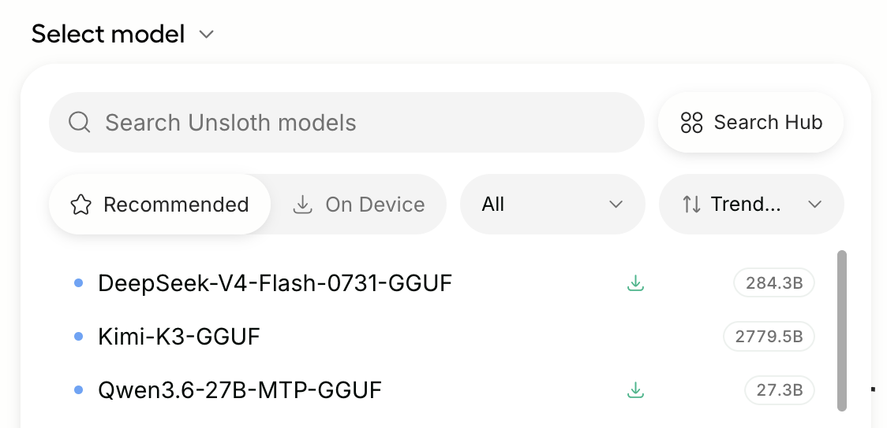
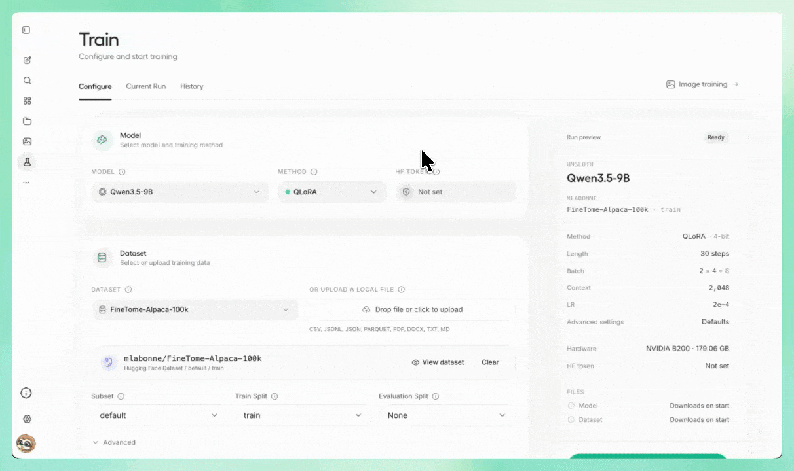
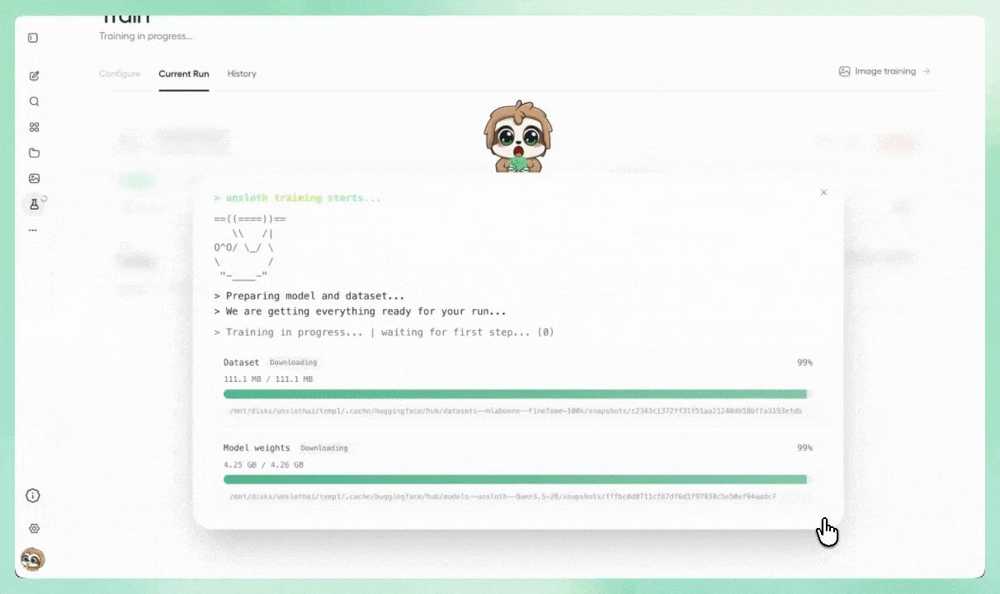

안녕하세요. dev.log입니다.
AI에게 같은 요청을 해도 원하는 말투나 형식의 답을 매번 다시 설명해야 할 때가 있습니다. 회사의 문의 답변처럼 일정한 규칙을 익히게 하거나, 내가 모은 예시를 바탕으로 특정한 답변 방식을 가르치고 싶을 수도 있습니다. 이때 쓰는 방법이 파인튜닝입니다. 이미 만들어진 AI 모델에 원하는 질문과 답변 예시를 추가로 학습시켜 쓰임새를 조정하는 과정입니다.
Unsloth Desktop은 이 파인튜닝 과정을 파이썬 코드 대신 화면에서 진행할 수 있게 만든 무료 오픈소스 앱입니다. 모델을 내 컴퓨터에 내려받아 대화해 보고, 학습 자료와 방식을 골라 훈련할 수 있습니다. 처음부터 Train을 누르기보다 작은 모델 하나로 채팅이 되는지 확인하면 시작이 훨씬 단순해집니다.

Unsloth Desktop은 무엇을 하는 앱일까
Unsloth는 누구나 내려받을 수 있도록 공개된 AI 모델을 실행하고 파인튜닝하는 오픈소스 프로젝트입니다. 기존에는 파이썬 코드가 적힌 웹 노트북을 열어 학습 명령을 실행하는 방식이 익숙했습니다. Desktop은 그 과정을 Windows나 macOS의 일반 프로그램처럼 사용할 수 있도록 화면으로 옮긴 제품입니다.
일반 AI 채팅 서비스와 가장 큰 차이는 남이 운영하는 AI에 접속하는 대신, 공개 모델을 내 컴퓨터로 가져와 직접 다룬다는 점입니다.
| 구분 | 일반 AI 채팅 서비스 | Unsloth Desktop |
|---|---|---|
| 시작 방법 | 웹이나 앱에서 바로 질문 | AI 모델을 먼저 내려받아 실행 |
| 모델이 작동하는 곳 | 서비스 제공자의 서버 | 내 컴퓨터 |
| 나에게 맞추는 방법 | 제공되는 설정 안에서 조정 | 준비한 예시 데이터로 파인튜닝 |
| 잘 맞는 목적 | 빠르게 질문하고 답을 받을 때 | 로컬 AI를 실행하거나 답변 방식을 직접 학습할 때 |
파인튜닝은 AI를 처음부터 새로 만드는 작업이 아닙니다. 이미 말을 이해하고 답할 수 있는 기본 모델에 예시를 더 보여 주어 말투, 출력 형식, 특정 업무의 응답 방식을 조정합니다. 그래서 모델 선택보다 먼저 “어떤 입력에 어떤 답을 하게 만들 것인가”를 정하는 일이 중요합니다.
공식 FAQ는 Desktop이 오프라인 실행을 지원하고, 사용 정보를 자동으로 전송하는 텔레메트리를 수집하지 않는다고 안내합니다. 인터넷 연결 없이 로컬 모델을 쓰고 싶은 사람에게 매력적인 이유입니다. 회사나 기관의 민감한 자료를 넣는다면 이 설명만 믿기보다 내부 보안 규정과 앱 권한도 함께 확인해야 합니다.
내 컴퓨터로 어디까지 할 수 있을까
Unsloth Desktop v0.1.701-beta는 2026년 8월 12일 한국 시간에 공개됐습니다. 공식 다운로드 페이지에서 Windows, macOS, Linux용 설치 파일을 받을 수 있습니다.
설치 파일이 있다는 것과 모든 AI 모델을 학습할 수 있다는 것은 다른 이야기입니다. 모델이 클수록 저장 공간과 메모리를 많이 쓰고, 학습은 단순 채팅보다 더 많은 자원을 요구합니다. 컴퓨터 사양을 잘 모른다면 아래 두 단어만 먼저 구분하면 됩니다.
- CPU는 대부분의 계산을 맡는 컴퓨터의 기본 처리 장치입니다.
- GPU는 많은 계산을 동시에 처리해 AI 학습을 빠르게 만드는 장치입니다.
Desktop 릴리스가 밝힌 범위는 다음과 같습니다.
| 내 환경 | 공식 안내 | 현실적인 첫 목표 |
|---|---|---|
| CPU만 있는 컴퓨터 | 채팅과 데이터 준비 기능(Data Recipes) 지원 | 작은 모델 채팅과 학습 자료 준비 |
| NVIDIA·AMD·Intel GPU 또는 Mac | 넓은 하드웨어 범주를 지원 | 앱에 표시되는 모델별 요구 사항 확인 |
| 오래된 장치 | 원활히 지원되지 않을 수 있음 | 큰 모델보다 작은 모델 로딩부터 확인 |
GPU 이름이 지원 목록에 있어도 학습과 실행 가능 여부는 모델과 내부 처리 방식에 따라 달라집니다. 처음에는 화면에 표시된 파일 크기를 보고 작은 모델을 고르는 편이 안전합니다. 큰 파일을 오래 내려받은 뒤 메모리 부족을 만나는 일을 줄일 수 있습니다.
처음에는 작은 모델로 채팅해 보기
앱을 열면 상단의 Select model이나 왼쪽 Model hub에서 AI 모델을 고를 수 있습니다. 스마트폰에 앱을 설치하듯, 여기서는 사용할 AI 모델 파일을 먼저 내려받는다고 생각하면 쉽습니다.

모델 이름 옆에는 GGUF와 4-bit 같은 표시가 보일 수 있습니다. GGUF는 로컬 AI 실행에 널리 쓰이는 모델 파일 형식입니다. 4-bit는 모델을 더 작은 용량으로 줄여 저장 공간과 메모리 부담을 낮춘 버전을 뜻합니다. 숫자를 줄인 만큼 원본 모델과 완전히 같지는 않지만, 처음 실행할 모델로는 접근하기 쉽습니다.
첫 확인은 다음 순서면 충분합니다.
- 운영체제에 맞는 Desktop을 설치하고 앱을 엽니다.
Select model에서 이미 받은 모델인On Device와 새로 받을 모델을 구분합니다.- 파일 크기가 작고 내 컴퓨터에 여유 있게 들어가는 GGUF 모델을 내려받습니다.
- 새 채팅을 열어 짧은 질문을 보냅니다.
- 답변이 정상적으로 나오면 왼쪽 메뉴의
Train으로 이동합니다.
채팅이 되지 않는 상태에서 학습 설정부터 바꾸면 문제의 위치를 찾기 어렵습니다. 모델 다운로드, 모델 불러오기, 로컬 채팅이 먼저 통과해야 이후 오류를 학습 단계로 좁힐 수 있습니다.
학습 자료는 정답 예시처럼 준비하기
AI 모델에 문서 파일을 한꺼번에 넣는다고 원하는 답변 방식이 저절로 생기지는 않습니다. 파인튜닝에 쓰는 데이터는 이런 질문이 들어오면 이렇게 답한다는 예시 모음에 가깝습니다.
예를 들어 고객 문의 답변을 학습시킨다면 아래처럼 입력과 원하는 출력을 짝지을 수 있습니다.
| 입력 예시 | 원하는 출력 예시 |
|---|---|
| 배송이 늦어지고 있어요 | 지연에 대한 사과, 확인 방법, 예상 일정을 존댓말로 안내 |
| 환불은 어디에서 신청하나요? | 신청 메뉴와 필요한 정보를 세 문장 안에서 안내 |
이 표는 데이터 구조를 설명하기 위한 예시입니다. 실제 학습 자료를 만들 때는 세 가지를 먼저 정하세요.
- 모델에게 맡길 한 가지 일을 정합니다.
- 답변의 말투와 길이, 형식을 통일합니다.
- 틀린 정보와 중복 예시를 정리합니다.
Unsloth 데이터셋 가이드도 데이터의 목적, 원하는 출력 형식, 출처와 품질을 먼저 정하도록 권합니다. 예시 안에 같은 오류가 반복되면 학습 화면이 정상적으로 끝나도 그 오류까지 따라 배울 수 있습니다.
Train 화면에서 고를 세 가지
Train 화면에서 처음 볼 곳은 왼쪽 위입니다. Model, Method, Dataset 세 항목을 순서대로 확인한 뒤 오른쪽 Run preview에서 내가 고른 값이 맞는지 대조합니다.

Model은 학습에 사용할 기본 AI 모델을 고르는 곳입니다. 앞에서 채팅을 확인한 작은 GGUF와 같은 모델일 필요는 없습니다. 작은 모델 채팅은 앱의 다운로드와 로컬 실행이 되는지 먼저 확인하는 단계이고, Train에서는 선택한 학습 방식을 지원하는 모델인지 다시 확인해야 합니다.
Method는 어떤 방식으로 학습할지 고르는 항목입니다. 화면에 보이는 QLoRA는 큰 기본 모델은 대부분 그대로 두고, 작은 추가 부품인 LoRA 어댑터를 학습하는 방식입니다. 기본 모델을 4비트로 줄여 불러오기 때문에 전체 모델을 다시 학습하는 것보다 메모리 부담을 낮출 수 있습니다.
Dataset에는 앞에서 준비한 질문과 답변 예시를 넣습니다. 처음에는 많은 자료보다 형식이 잘 맞는 소량의 예시로 전체 흐름을 확인하는 편이 낫습니다. 파일 열과 대화 형식이 잘못됐다면 오래 학습해도 원하는 결과로 이어지지 않습니다.
그 아래 설정은 한 번에 모두 바꾸지 않아도 됩니다.
| 화면 항목 | 무엇을 바꾸나 | 처음 확인할 것 |
|---|---|---|
| Context | 모델이 한 번에 읽는 글의 길이 | 실제 예시보다 지나치게 길지 않은가 |
| Max Steps·Epochs | 예시를 반복해 학습하는 양 | 흐름 확인용 실행이 너무 길지 않은가 |
| Learning Rate | 학습할 때 한 번에 바꾸는 정도 | 이유 없이 기본값을 크게 바꾸지 않았는가 |
| Run preview | 선택한 모델·데이터·방식의 요약 | 왼쪽에서 고른 값과 일치하는가 |
첫 실행에서는 짧게 끝나는 설정으로 파일 형식과 진행 화면부터 확인하세요. 결과를 바꾸고 싶을 때는 한 항목씩 조정해야 무엇이 영향을 줬는지 알 수 있습니다.
99% 뒤에는 학습 스텝 확인하기
Start training을 누르면 학습 전에 데이터셋과 모델 파일을 준비합니다. 공식 데모의 Current Run 화면에는 Training in progress, waiting for first step (0), Dataset과 Model weights 99%가 동시에 표시됩니다.

여기서 99%는 학습 완료율이 아니라 다운로드 진행률입니다. 학습이 실제로 움직이는지는 waiting for first step (0)의 숫자가 0을 벗어나는지 확인해야 합니다.
- Dataset과 Model weights 다운로드가 끝났는지 봅니다.
- 첫 스텝 숫자가 1 이상으로 늘어나는지 확인합니다.
- 스텝이 늘어난 뒤 정답과 얼마나 어긋났는지 나타내는
loss그래프와 GPU 사용량이 함께 갱신되는지 봅니다.
진행 막대가 오래 멈추면 화면에 표시된 상태와 오류 문구를 먼저 남겨 두세요. 이 화면 하나만으로는 다운로드, 모델 불러오기, 하드웨어 가운데 원인을 구분할 수 없습니다. 오류 문구를 기준으로 공식 Troubleshooting & FAQs나 GitHub 이슈에서 같은 증상을 찾는 편이 빠릅니다.
학습이 끝난 뒤에는 History에서 실행 기록을 확인하고, 사용할 프로그램에 맞는 모델 형식으로 내보낼 수 있습니다. GGUF처럼 익숙한 형식을 고르면 로컬 AI 실행 도구로 옮기기 쉽습니다.
Desktop 대신 Studio·Core를 고를 때
Unsloth에는 Desktop 외에도 Studio와 Core가 있습니다. 모두 같은 프로젝트의 도구이지만 사용하는 방식이 다릅니다.
| 하고 싶은 일 | 맞는 시작점 | 이유 |
|---|---|---|
| 코드를 몰라도 로컬 AI를 실행하고 학습해 보고 싶음 | Desktop | 모델·데이터·진행 상태를 화면에서 고를 수 있음 |
| 로컬 서버와 브라우저 화면을 함께 쓰고 싶음 | Studio | 웹 UI 방식으로 운영 가능 |
| 데이터 처리와 반복 실험을 코드로 남기고 싶음 | Core 또는 노트북 | 설정과 결과를 버전 관리하기 쉬움 |
| 학습용 GPU가 없는 컴퓨터에서 먼저 경험하고 싶음 | 공식 Colab 노트북 | 클라우드 GPU로 학습 흐름을 따라갈 수 있음 |
처음 접하는 사람이라면 Desktop에서 작은 모델을 내려받아 한 번 대화해 보는 것만으로 충분합니다. 그다음에는 같은 형식의 정답 예시를 작은 묶음으로 준비해 Run preview까지 확인해 보세요. 이 두 단계가 자연스럽게 이어질 때 짧은 QLoRA 학습으로 넘어가면 됩니다.
Unsloth Desktop은 아직 Beta이므로 설치 전 공식 다운로드 페이지와 최신 릴리스 노트를 확인하세요.